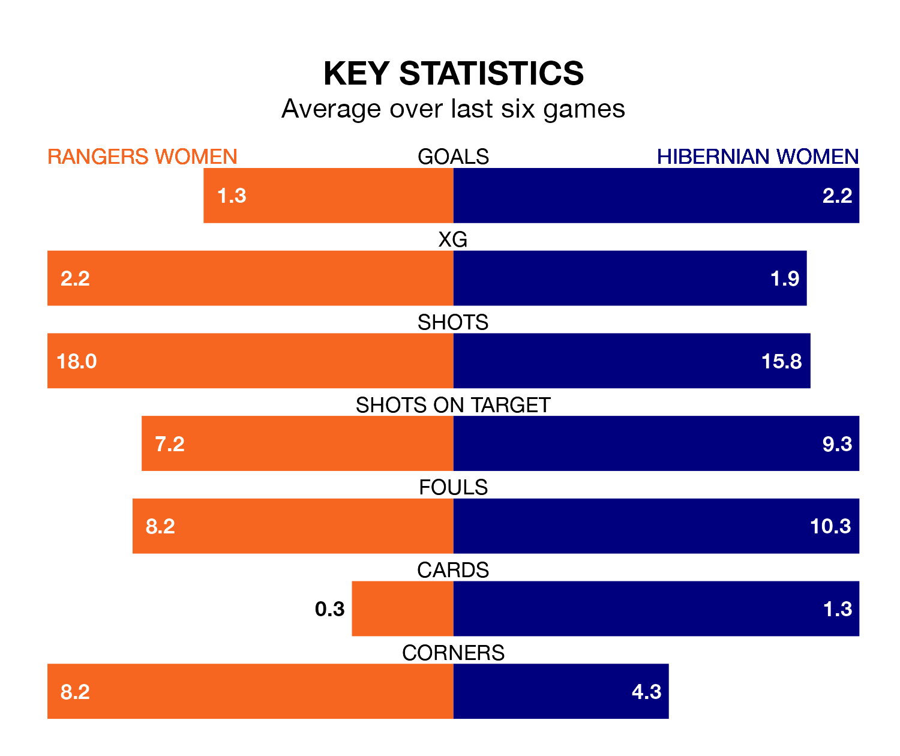

Rangers Women host Hibernian Women in Sunday's early match at the Broadwood Stadium looking to bounce back from defeat last time out in SWPL 1.
Rangers, who sit top of the league after 23 games, fell to a 2-1 away defeat to Celtic Women on March 17.
They face a Hibernian side who picked up a win in their last match, a 2-0 victory against Partick Thistle Women, and who sit fifth in the table.
With 93 goals in 23 games so far this season, Rangers are the league's second-highest scorers with 4.0 goals per game. And they are conceding fewer than average, letting in 12 goals at a rate of 0.5 per game.
Hibernian are also above average scorers, with 2.7 goals per game, compared to a league average of 2.1. They have conceded 1.4 goals per game.
With Jenna Fife between the sticks, the hosts can rely on one of the league's safest pair of hands. She has kept 10 clean sheets in her 19 appearances this season, and no 'keeper has prevented the opposition scoring more often in SWPL 1.
In Hibs's net, Katie Fraine has seven clean sheets in 15 games. She has conceded a goal every 73 minutes, more than twice as often as the 171 minutes between goals for Fife.
In the last 10 years, Rangers and Hibernian have played each other on 13 occasions. Rangers won all of them.
On average, Rangers scored 2.5 goals and Hibs 0.1 in those matches.
Their last meeting was on March 3, when Rangers won 3-0 away.
Rangers are in reasonable form in SWPL 1, with three wins and two draws from their last six games.
With three wins and a draw over that period, the away side's form is slightly worse – they have taken 10 points from 18, compared to Rangers's 11.
Updated: 10:31 (UTC), 31/03/24